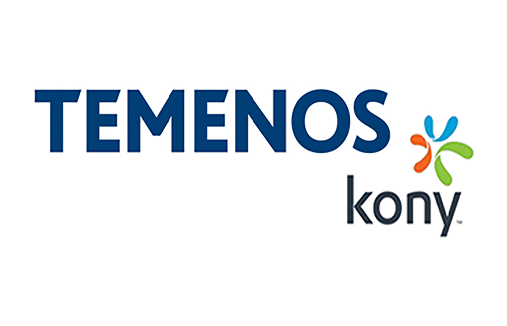
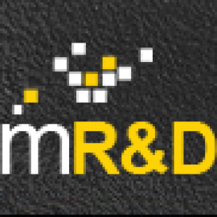
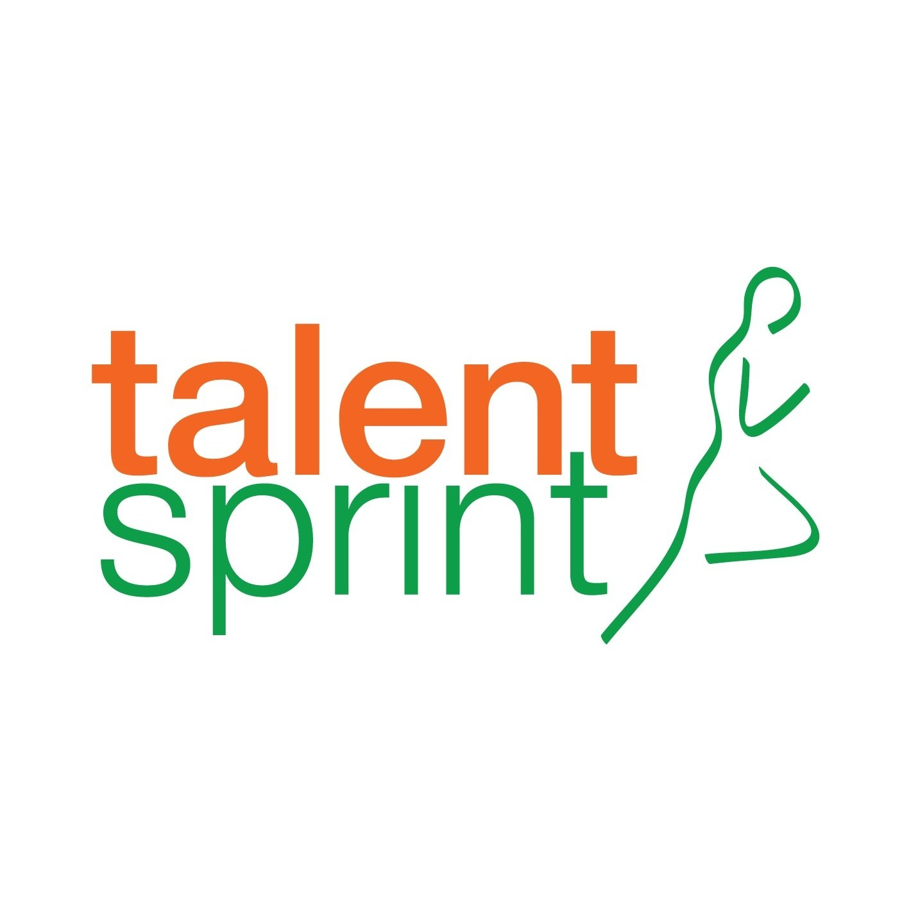

Technical expertise: 0 Projects
Education

Spring 2020 - Ongoing
Master’s Degree In Computer Science - 4.24 GPA
Georgia State UniversityCourse Work: Advance Algorithms, Advance Machine Learning, Big Data Programming, Mobile Application Development, Web Programming

2013-2017
Bachelor's Degree In Computer Science - 3.7 GPA
Jawaharlal Nehru Technological University, HyderabadGold Medalist of Computer Science Department
Experience
Jan 2020 - Present
Graduate Research Assistant | Cyber Security Department
Georgia State University- Working on NSF-supported project - “NSF RAPID: Underground Markets for Critical Equipment during the COVID-19 Pandemic”
- Developed web scrapers to collect data from suspicious websites and performed weekly analysis.
- Engineered Automatatic captcha solving sytem using Tessaract with a 80% accuracy rate to automate the scrapers.
- Created automatic weekly business reports, empowering institute-wide policy decisions using Python, Selenium and SQL.
- Coordinated with the associate director to maintain and develop Smartworld 2021: The 7th IEEE Smart World Congress, Atlanta website (https://grid.cs.gsu.edu/~smartworld2021/cmt.php)
Jan 2020 - May 2020
Graduate Teaching Assistant
Georgia State University- Tutored undergraduate students for Design & Analysis of Algorithms and supervised the laboratory work of 60 students.
- Led discussion sections and laboratory sections, prepared, and proctored examinations, developed teaching materials and visual aids, and assisted faculty with student conferences and grading.
- Hosted weekly recitations and office hours to offer support to students

Mar 2017 - Nov 2019
Full Stack Devloper
Temenos AG(previously Kony India Pvt LTD)- Rolled out the model driven architecture 2.0, thereby increasing the app extensibility and upgradability by more than 80% and bagged the individual excellence award
- Developed responsive iOS, Android and Desktop web applications on 20+ modules in Kony Digital Banking suite for clients like TDECU, EHS, FSCU etc., following Agile environment
- Designed and developed web applications using MVC framework for digital banking service suite with push notification services and Image Upload services.

May 2016 - June 2016
Intern
Mission R&D- Implemented file system decoder, compiler simulations and Django application and other 20 mini projects
- Recieved training from industry professionals for 30 days on product development, systems design and tight code

May 2015 - May 2016
Mentee
Microsoft India R&D Center- Performed sentimental analysis on twitter data with 1.6 million tweets using hadoop, and cancer screening application, GHCI Hackathon
- Developed a gaming app and deployed on microsoft store with 1000+ downloads (Hawk Eye)
- presented a poster on Machine Learning and attended a workshop on IOT devices and it's application in real time
- My learning includes the life cycle of product development, Architecture of a product and segments in it, UI and UX of a product, which inspired me to conduct a workshop under IEEE.

Dec 2013 - Dec 2016
Mentee
Talent Sprint- Top 5 performer in "Women in Software Engineering" program of 8 modules.
- Presented Java dynamic web project “Shopaholics” in front of Microsoft R&D Hyderabad and ADP India Pvt Ltd.
- Presented knowledge base for Google and was selected as one of the best presentations
Skills
PROGRAMMING LANGUAGES:WEB DEVELOPMENT
Awards & Publications
2018 - 2019
Spot Award
Temenos AG (previously Kony India Pvt Ltd.)Provided the frameworks for performance management of applications and handling performance issues of an application.
2017 - 2018
Individual Excellence
Temenos AG (previously Kony India Pvt Ltd.)Rolled out MDA, thereby increasing app extensibility by 70%
2013 - 2017
Gold Medalist
BVRIT Hyderabad, Affliated to JNTUComputer Science in Bachelors Degree at BVRIT, Hyderabad
2015 - 2016
Best Coder
Being ZeroWon first prize in BVRIT for Hyderabad best coder’s contest conducted by Being Zero
2015 - 2016
First Prize
Yappon 2015, EduKinect“Green Screen” Application for yound generation about environment at BVRIT Hyderabad
2013-2014
First Prize
BVRIT HyderabadPoster Presentation on “Generation of Computers” during National Level Students Tech Fest “Medhanvesh’14” organized by in First year
July 2019
International Journal
IJMETMERRecognition of Data Items using Tensor Flow, ISSN No: 2348-4845, Issue No: 7 (July)